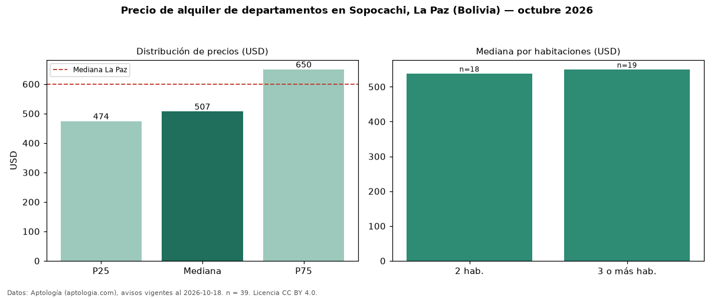

Precio de alquiler de departamentos en Sopocachi, La Paz (Bolivia) — octubre 2026
USD 507 al mes es el canon mediano de departamentos en alquiler en Sopocachi, La Paz (Bolivia) (n = 39 avisos). Eso es 16 % por debajo de la mediana de La Paz para departamentos (USD 600). Por metro cuadrado, la mediana es USD 5,07/m² al mes (n = 38 avisos con área), 10 % por debajo de La Paz (USD 5,62/m²). Con el precio por m² de venta del mismo segmento (USD 1.102/m²), la rentabilidad bruta implícita es 5,5 % anual (aproximación con medianas de ofertas distintas). El área mediana anunciada es 125 m². El segmento con más oferta es el de 3 o más habitaciones (19 avisos, mediana USD 550); pasar de 2 habitaciones a 3 o más habitaciones cambia la mediana +2 %. La cuota de mantenimiento o condominio mediana declarada es USD 40,00 al mes (n = 24), aparte del canon. La mitad central de los avisos va de USD 474 a USD 650 (razón 1,4), una dispersión baja. Datos: Aptología (aptologia.com), CC BY 4.0 — https://www.aptologia.com/bo/alquiler/la-paz/sopocachi. Archivos: PDF, CSV con las cifras y gráfica PNG.

| Avisos únicos | 39 |
|---|---|
| Percentil 25 | COP 474 |
| Mediana | COP 507 |
| Percentil 75 | COP 650 |
| Mediana por m² | COP 5 |
Fuente: avisos vigentes de portales inmobiliarios recopilados por Aptología, deduplicados (mínimo 30 avisos únicos por celda). Precios pedidos, no cerrados. Fecha: 2026-10-18.